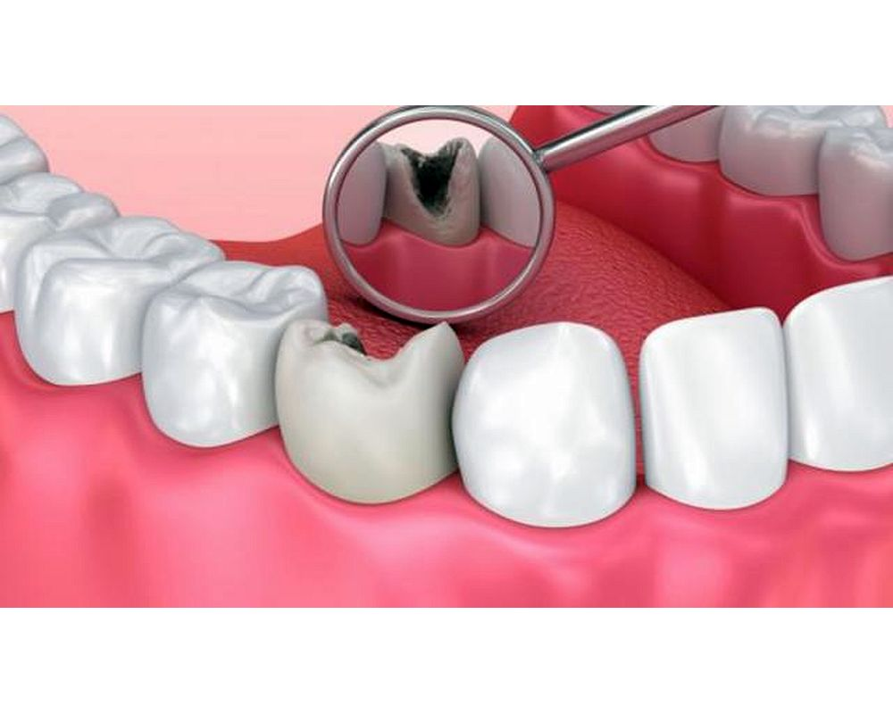

Tratamiento de Caries: Preservando tu Sonrisa con Salud Dental
El tratamiento de caries es un procedimiento dental esencial diseñado para abordar las cavidades o lesiones en los dientes causadas por la caries dental. Las caries son áreas dañadas en los dientes que pueden resultar de la acumulación de placa bacteriana y ácidos que erosionan el esmalte dental con el tiempo.
En nuestra clínica, entendemos la importancia de abordar las caries de manera oportuna para prevenir complicaciones y preservar la salud dental a largo plazo. Nuestro tratamiento de caries se centra en eliminar el tejido dental afectado y restaurar la estructura del diente afectado.
Durante el tratamiento de caries, nuestro equipo altamente capacitado se asegura de que nuestros pacientes estén cómodos y tranquilos en todo momento. Utilizamos técnicas avanzadas y materiales de alta calidad para garantizar resultados duraderos y una experiencia positiva para cada paciente.
Al elegir nuestro tratamiento de caries, estás tomando un paso importante hacia una sonrisa más saludable y radiante. No permitas que las caries afecten tu calidad de vida. ¡Contáctanos hoy mismo para programar una consulta y descubre cómo podemos ayudarte a preservar tu sonrisa con salud dental!
